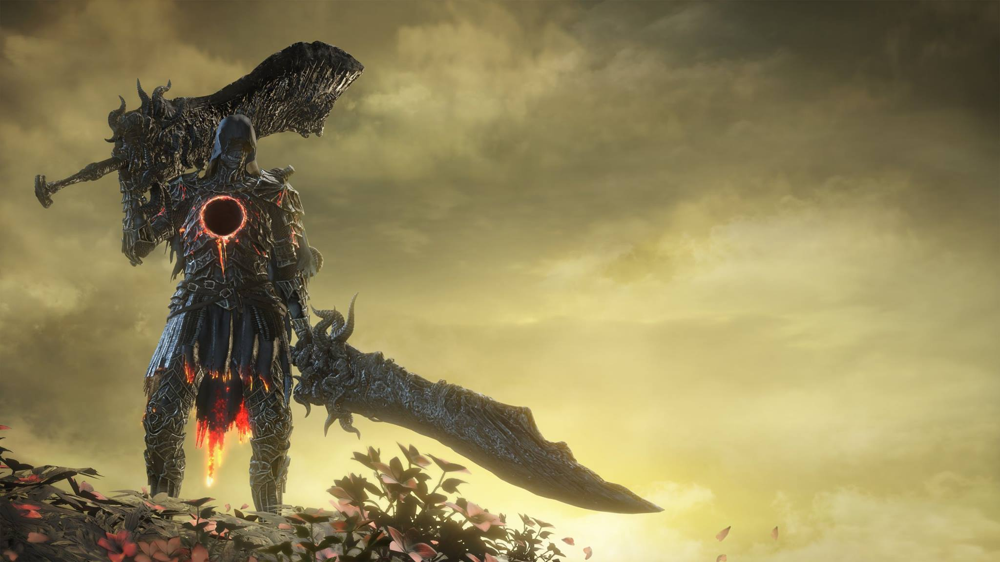

Hidetaka Miyazaki revient pour son magnum opus

Dark Souls III, sorti en 2016, est le troisième volet de la célèbre série d'action-RPG développée par FromSoftware
et dirigée par Hidetaka Miyazaki. Ce jeu marque le retour du créateur de la franchise après le succès retentissant
de Dark Souls, et la reception mitigée de Dark Souls II. Avec ce troisième et ultime volet, Miyazaki vise à conclure la trilogie avec une expérience
qui combine les meilleurs éléments des précédents jeux tout en introduisant de nouvelles mécaniques de gameplay et un univers encore plus riche.
Dark Souls III ne s’est pas arrêté à son aventure principale : le jeu a bénéficié de deux extensions majeures,
toutes deux acclamées par les joueurs et la critique. Ces contenus additionnels enrichissent l’univers et offrent
des combats mémorables qui prolongent l’expérience. On pourrait croire que l’aventure se terminait avec la quête
principale, mais ces DLC ont ajouté une nouvelle profondeur, presque comme si FromSoftware avait voulu offrir un
dernier cadeau aux fans. Ils ne se contentent pas d’ajouter quelques heures de jeu : ils élargissent la mythologie,
proposent des environnements inédits et des boss qui marquent durablement la mémoire des joueurs. Bref, c’est le
genre de contenu qui transforme une bonne expérience en une épopée encore plus riche.
Le premier, Ashes of Ariandel, est sorti le 25 octobre 2016. Il plonge le joueur dans le Monde Peint
d’Ariandel, une contrée glaciale rongée par la corruption. L’ambiance est oppressante et poétique, et l’affrontement
final contre Sœur Friede reste l’un des combats les plus marquants de la saga. Mais au-delà du boss, ce DLC séduit
par son atmosphère unique : les paysages enneigés, les ennemis étranges et la sensation d’isolement donnent
l’impression d’explorer une peinture vivante. On y retrouve ce mélange de beauté et de danger typique de Dark Souls,
où chaque pas peut être le dernier. C’est une extension qui, sans être la plus longue, a laissé une empreinte forte
grâce à son ambiance et son duel final absolument mémorable.
Le second, The Ringed City, est arrivé le 28 mars 2017. Ce DLC emmène le joueur aux confins du monde, dans
une cité mystérieuse où se mêlent ruines et secrets millénaires. L’atmosphère y est apocalyptique, et le dernier
combat contre l’Esclave Chevalier Gael conclut la trilogie sur une note épique et tragique. Mais ce n’est pas
seulement une fin spectaculaire : c’est aussi un voyage à travers des décors impressionnants, des ennemis redoutables
et des révélations sur la mythologie de l’univers. On sent que c’est la conclusion pensée comme un adieu, une façon
de dire « voilà, c’est fini » mais avec panache. Les joueurs qui l’ont parcouru parlent souvent de ce mélange de
grandeur et de mélancolie, comme si Dark Souls III tirait sa révérence en offrant un dernier feu d’artifice.
Deux DLC incontournables